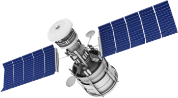
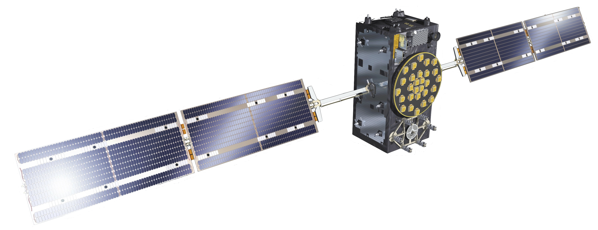
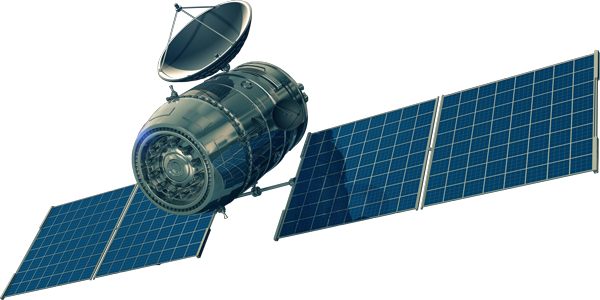
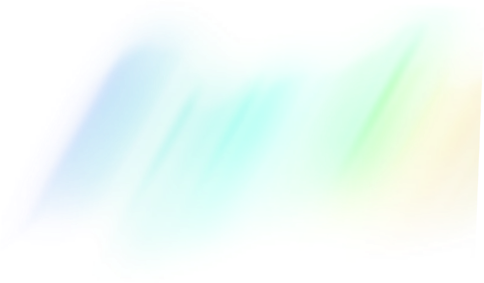
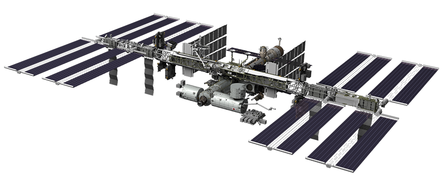
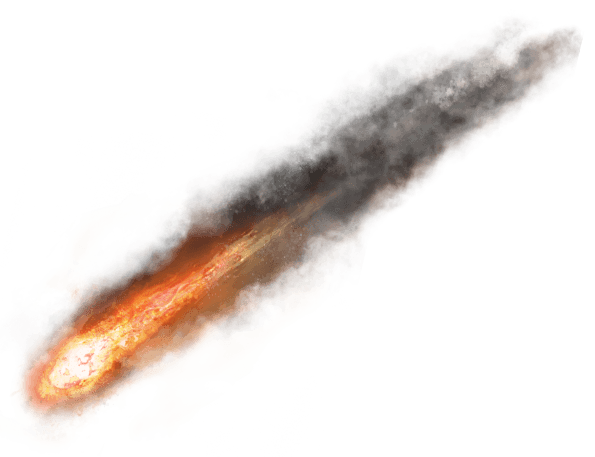
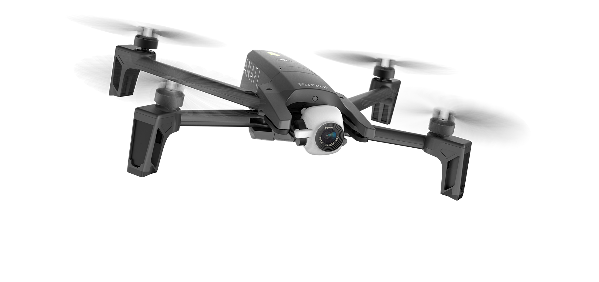

Słońce i atmosfera
Fizyka środowiska

Słońce
Gwiazda ciągu głównego o typie widmowym G (żółty karzeł) w centrum układu słonecznego. Uformowała się około 4.6 miliarda lat temu.
Spalanie
Słońce spala 600 milionów ton wodoru w ciągu każdej sekundy. Energia wytworzona w ten sposób we wnętrzu słońca potrzebuje od 10 do 170 tysięcy lat na wydostanie się na jego powierzchnie i jest źródłem ciepła oraz światla gwiazdy.

Śmierć
Kiedy wodór w jądrze słońca zacznie się wypalać, a jego fuzja zwolni do punktu w którym gwiazda nie będzie w równowadze hydrostatycznej, jądro słońca przejdzie proces gwałtownego kurczenia się podczas gdy jego wierzchnie warstwy zaczną się rozszerzać tworząc czerwonego olbrzyma. Obliczenia wskazują, że słońce w tej fazie będzie miało średnicę większą od orbity wenus a ziemia nie będzie nadawała się do życia.
Następną fazą jest odrzucenie przez gwiazdę wierzchnich warstw i przeistoczenie się w białego karła w którym nie przebiega już fuzja wodoru. Gwiazda będzie się powoli ochładzać nadal gorąca od jeszcze niedawno trwającej fuzji.

Atmosfera
Warstwa gazów nazywana potocznie "powietrzem" otaczająca ziemię i utrzymywana przez grawitację.
Umożliwia ona istnienie na Ziemii życia, jej ciśnienie sprawia że na powierzchni może utrzymać się woda w stanie ciekłym, pochłania promieniowanie UV, ogrzewa powierzchnię oraz redukuje wachania temperatury między dniem i nocą.



Egzosfera
Najbardziej oddalona warstwa atmosfery, stanowi ona płynne przejście między atmosferą a przestrzenią kosmiczną a jej górna granica jest bardzo trudna do określenia. Dolną granicą jest termosfera i znajudje się ona na wysokości 500-700km.
W egzosferze nie występuje zjawisko rozchodzenia się fali dźwiękowej a gazy są tak rozrzedzone, że cząsteczki je tworzące poruszają się po trajektoriach balistycznych a ich zderzenia są bardzo mało prawdopodobne.
Znajduje się w niej większość satelitów okrążających Ziemię.


Termosfera
Druga najwyższa wartstwa ziemskiej atmosfery od 90km nad powierzchnią do ~600km. Jest ona częscią jonosfery tj. zjonizowanej przez wiatr słoneczny części górnej atmosfery Ziemii.
Temperatura termosfery może wynosic nawet 1500 stopni Celsjusza, choć przez jej małą gęstość temperatura ta nie ma dużego wpływu na przebywające tam obiekty.
W tej warstwie można zaobserwować zorze polarne oraz to w niej krąży Międzynarodowa Stacja Kosmiczna (ISS).

Mezosfera
Warstwa atmosfery znajdująca się na wysokości od 50 do 90km. Jest to najzimniejsze miejsce na Ziemii, jej temperatura maleje z wysokością i w najzimniejszym punkcie wynosi ok. -85°C.
Skład tej warstwy atmosfery jest niemal identyczny z niższymi warstwami, różni się jednak znacznie niższą gęstością oraz brakiem pary wodnej. Jest to najwyższa warstwa w której występują chmury w ziemskiej atmosferze (tzw. Obłoki Srebrzyste). Spala się w niej również większość meteorów po wejściu w atmosferę Ziemii.
Jest to najtrudniejszy obszar do badań atmosfery ponieważ nie docierają do tej warstwy żadne balony ani samoloty a sztuczne satelity krążą ponad nią by uniknąć oporów powietrza.
Stratosfera
Druga najniższa warstwa atmosfery znajdująca się na wysokości od 10 do 50km. Zawiera warstwę ozonową co powoduje dużą absorpcję promieniowania słonecznego i wzrost temperatury tej warstwy wraz z rosnącą wysokością.
Ze względu na swój profil temperaturowy stratosfera jest bardzo stabilna i brak w niej silnych wiatrów, turbulencji, rzadko występują chmury czy innych zjawiska pogodowe.
Jest to najwyższa warstwa atmosfery do której mogą dotrzeć samoloty z silnikami odrzutowymi (również pasażerskie chcące uniknąć turbulencji)

Troposfera
Najniższa warstwa atmosfery sięgająca do 17km w górę w pobliżu równika.
Zawiera ona większość masy atmosfery Ziemii oraz niemal całą parę wodną w powietrzu. Występują tutaj najważniejsze procesy wpływające na pogodę i klimat. Jest ona najbardziej dynamiczną częścią atmosfery, jej dolne warstwy zmieniają temperaturę reagując na zmiany temperatury powierzchnii. Znajdują się tutaj wszystkie na co dzień widoczne chmury, choć wysokie cumulonimbusy mogą penetrować dolne warstwy stratosfery. Jest ona głównym obiektem zainteresowania meteorologów oraz klimatologów.
Jest ona jedyną warstwą dostępną dla pojazdów śmigłowych (samolotów, helikopterów, dronów itp.)
~600km
~90km
~50km
~10km

Literatura
- Williams, D.R. (1 July 2013). "Sun Fact Sheet". NASA Goddard Space Flight Center.
- Dr. Tony Phillips. "How Round is the Sun?". NASA. 2 October 2008.
- Zell, Holly (2015-03-02). "Earth's Upper Atmosphere". NASA.
- Barry, R.G.; Chorley, R.J. (1971). Atmosphere, Weather and Climate. London: Menthuen & Co Ltd.